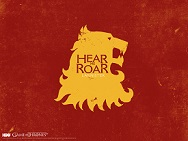
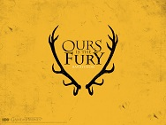
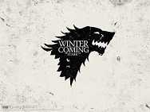
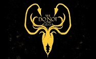

Aerys fue el único hijo que tuvo el rey Jaehaerys II Targaryen. Cuando el rey Aegon V el Improbable murió en la Tragedia de Refugio Estival, Jaehaerys se convirtió en Rey de los Siete Reinos y Aerys pasó a ser el heredero al Trono de Hierro y nuevo Príncipe de Rocadragón. La delicada salud de su padre le impidió reinar mucho tiempo, de modo que a los pocos años, Aerys ascendió al trono, convirtiéndose en «Rey de los Siete Reinos».
Su reinado comenzó de forma prometedora; Aerys era un joven vigoroso, carismático, generoso y capaz de ser gentil aunque se irritaba con facilidad. Las crónicas de la obra destacan que Aerys era vulnerable a los elogios, lo que en la realidad escondía una acusada falta de seguridad en sí mismo.2 Su primera decisión fue nombrar a un viejo conocido suyo, Tywin Lannister, como su nueva Mano del Rey, impresionado por cómo había lidiado con las casas levantiscas de su señorío. Bajo el gobierno de Aerys y Tywin los Siete Reinos prosperaron, viviendo una etapa de riqueza, paz y unión. Tywin demostró ser un extraordinario administrador, lo que al final terminó generándole la envidia de Aerys al ver cómo Tywin era reconocido como el auténtico regidor de los Siete Reinos y no él. La relación entre Aerys y Tywin empezó a resquebrajarse cuando Tywin se casó con su prima, Joanna Lannister. Aerys sentía pasión por Joanna y alguna de las «bromas» que Aerys realizó hacia Joanna no fueron bien recibidas por Tywin. Por otro lado, el carácter de Aerys hacía que fuera presa fácil de los aduladores, los cuales despreciaban a Tywin como forma de complacer al rey. Pronto Aerys empezó a intentar depender menos de Tywin como forma de demostrar su valía a la vez que su carácter se volvía más errático y paranoico. El matrimonio entre Aerys y Rhaella también se volvió cada vez más hostil. Ella sufrió varios abortos y niños que nacieron muertos, o fallecieron al poco tiempo. Aerys buscó culpables por todos los rincones, llegando a obligar a la reina a no abandonar la Fortaleza Roja bajo ningún concepto. Finalmente, la reina dio a luz al príncipe Viserys Targaryen, lo que pareció mejorar el cada vez más inestable carácter del rey.
El secuestro de Lyanna Stark a manos de Rhaegar causó que el heredero de la Casa Stark acudiera a Desembarco del Rey demandando justicia, Aerys lo acusó de conspirar contra Rhaegar y ordenó arrestarlo. Cuando su padre llegó para responder por él, demandó un juicio por combate; Aerys declaró al fuego valyrio el campeón de los Targaryen y quemó a Lord Stark en su propia armadura mientras su hijo era estrangulado. Estos sucesos causaron la que se vino a denominar la Rebelión de Robert cuando las Casas Stark, Baratheon, Tully y Arryn se levantaron contra el Trono de Hierro. La rebelión seguía extendiéndose de modo que Aerys destituyó a Lord Owen Merryweather como Mano del Rey y nombró a Jon Connington, un joven amigo de Rhaegar conocido por su audacia y vigorosidad. La derrota de Connington en batalla hizo que Aerys lo destituyera; Rhaegar le pidió que nombrara a Lord Tywin como Mano, pero él se negó y nombró a su Consejero de la Moneda, Lord Qarlton Chelsted. Tras la derrota y muerte del príncipe Rhaegar en la Batalla del Tridente, Aerys vio que la guerra estaba perdida y envió a su embarazada esposa y a su hijo Viserys rumbo a Rocadragón mientras él permanecía en la Fortaleza Roja junto a la princesa Elia Martell como una manera de asegurarse la lealtad de Dorne.
Rhaegar era descrito en la obra como el prototipo del perfecto príncipe: muy atractivo y galante, aunque con un espíritu melancólico. Se decía que era brillante y dominaba todo aquello que se proponía, siendo un habilidoso caballero. En la saga se menciona que era un músico excepcional, virtuoso con el arpa y se decía que sus canciones hacían que las mujeres lloraran al escucharlas. Era sumamente popular entre el pueblo llano y era objeto de deseo de las mujeres, como menciona el personaje de Cersei Lannister, la cual estaba enamorada del apuesto príncipe.
Rhaegar fue el primogénito de Aerys Targaryen y su hermana-esposa Rhaella. Nació el año 259 , en el mismo momento en el que se producía la Tragedia de Refugio Estival, donde murieron el rey Aegon V Targaryen junto a su hijo mayor y el Lord Comandante Duncan el Alto. Debido a que su padre se convirtió en Rey de los Siete Reinos, Rhaegar fue proclamado príncipe de Rocadragón y heredero del Trono de Hierro. Al parecer, siendo niño, Rhaegar leía compulsivamente y no mostró interés por las lides de la caballería, hasta que cuando cumplió 17 años leyó algo que lo impulsó a convertirse en caballero. Rhaegar se convertiría en un habilidoso guerrero, distinguiéndose en las justas, aunque nunca mostró la misma pasión por la caballería que por la música o la lectura. Rhaegar poseía también un carácter melancólico y solitario, teniendo unos pocos amigos cercanos como Jon Connington o el Guardia Real Ser Arthur Dayne. Rhaegar se divorció y se volvió a casar en secreto, lo que sugiere que Jon Nieve podría ser su hijo legítimo, no bastardo y por lo tanto heredero en línea directa al Trono de Hierro. En el último episodio se confirmó esto y efectivamente Rhaegar se casó con Lyanna Stark, por lo que Jon Nieve no es un bastardo y su verdadero nombre es Aegon Targaryen.
Físicamente, Viserys es descrito en la obra con los rasgos típicos de la Casa Targaryen: pelo plateado y ojos color lila. El personaje de Daenerys Targaryen, su hermana, lo describe con rasgos duros y afilados que le daban un aspecto serio y adusto. A lo largo de la obra se percibe que la única ambición de Viserys es recuperar el Trono de Hierro. Se considera a sí mismo el legítimo Señor de los Siete Reinos y demanda la obediencia y el respeto que ello merece. Sin embargo, Viserys es un hombre necio y arrogante que es totalmente ajeno a la realidad; cree que su linaje le otorga la legitimidad suficiente para sus aspiraciones y permanece ciego a la situación en la que se encuentra. El personaje de Viserys es presentado como el arquetipo de lo que en la obra es denominada «Locura Targaryen», que creen que pudo heredar de su padre, el rey Aerys II Targaryen. En un principio, Daenerys se muestra temerosa de su hermano mayor, pero conforme es consciente de la personalidad de su hermano comienza a actuar en consecuencia. Otro personaje como Tyrion Lannister definía a Viserys como un necio idiota que era el auténtico heredero del infame legado de su padre.
Viserys es presentado en el capítulo 1, dedicado a Daenerys Targaryen en Juego de tronos. Los hermanos se encuentran en la casa de Illyrio Mopatis, magíster de la ciudad de Pentos. Viserys está emocionado pues el magíster arregló el matrimonio de su hermana Daenerys con Khal Drogo, un poderoso Khal de los Dothraki dispuesto a aportar 10.000 hombres para la reconquista de Viserys de los Siete Reinos. Daenerys afirma que su hermano ha estado obsesionado toda su vida con recuperar el Trono de Hierro, lo que le ha llevado a deambular por todas las Ciudades Libres hasta quedarse sin dinero, por lo que es apodado como «El Rey Mendigo». En el capítulo 26, Daenerys relata cómo el magíster Illyrio le ofreció quedarse con él hasta que Drogo estuviera dispuesto a prestarle sus hombres, sin embargo, Viserys insistió en viajar con su khalasar para asegurarse de que Drogo cumplía lo pactado. Illyrio trató de explicarle que los Dothraki no creen en la compraventa, sino que Drogo le ofrecerá su ejército cuando estime oportuno. En mitad del camino, Daenerys le ordena al khalasar que se detenga, lo que causa la ira de Viserys, el cual no está dispuesto a aceptar órdenes de su hermana. Viserys intenta golpearla, hasta que uno de los jinetes de Daenerys lo evita; Jorah Mormont, un caballero exiliado que se ha puesto a su servicio, se niega a cumplir las órdenes de Viserys, llegando a decirle a Daenerys que: «Viserys es menos que la sombra de una serpiente». Como represalia por su acción, Daenerys le ordena a Viserys que camine, un castigo humillante para la cultura Dothraki.6 En ese mismo capítulo, ante las palabras de Ser Jorah, Daenerys se da cuenta de que Viserys nunca será rey. Ante la noticia de su castigo, los Dothraki comienzan a llamar a Viserys «Khal Rhae Mhar» («Rey de los Pies Sangrantes»), mientras que después lo apodaron «Khal Rhaggat» («El Rey del Carro») cuando Drogo le ofreció montar en uno de sus carromatos, lo que no dejaba de suponer una humillación aún mayor.7 En el capítulo 6, el khalasar llega a Vaes Dothrak, la capital de los Dothraki. Daenerys, ahora embarazada, acude a presentar a su hijo ante el Dosh Khaleen. Ser Jorah le declara a Daenerys que Viserys había pretendido robar sus huevos de dragón, creyendo que con ellos podría contratar mercenarios y una flota, pero que él lo impidió. En ese momento, durante los festejos, un borracho Viserys aparece esgrimiendo una espada, algo prohibido en Vaes Dothrak. Drogo le insulta afirmando que su lugar está con la escoria, lo que termina por desatar la furia de Viserys, que amenaza a Daenerys con matar al hijo que lleva en el vientre si Drogo no le da la corona que le prometió. Drogo exclama que le otorgará esa corona; en ese momento, sus jinetes de sangre inmovilizan a Viserys, mientras Drogo vuelca un caldero de oro fundido sobre su cabeza, matándolo. Ante el cadáver de su hermano, Daenerys exclama: «no era un dragón, el fuego no mata a un dragón».8
Daenerys heredó todos los típicos rasgos de la Casa Targaryen, el cabello rubio plateado y los ojos color púrpura, poseyendo una figura esbelta, agraciada y poderosa. Es descrita como una mujer extremadamente hermosa, pues a lo largo de la saga, ha conseguido muchos pretendientes. Respecto a su carácter, la personalidad de Daenerys es una de las que más evoluciona a lo largo de toda la saga. Al principio podemos verla como una muchacha asustadiza, retraída y sensible, que siente miedo por los abusos de su hermano mayor y temerosa de lo que su matrimonio con Khal Drogo pudiera deparar, pero según toma conciencia de su cargo como Khaleesi de los dothraki y va superando penalidades, Daenerys adquiere una personalidad mucho más decidida, audaz, carismática y valerosa. Uno de sus principales consejeros, Ser Barristan Selmy, afirma que ella tiene la auténtica personalidad de una reina. Por otro lado, también es una persona que se deja llevar mucho por sus sentimientos e idealismo y parece demostrar tener una gran necesidad de aceptación. Su enorme carisma hace que sea vista como una especie de "figura mesiánica".
En la Ciudad Libre de Pentos, Daenerys Targaryen contempla el horizonte. Su hermano mayor, Viserys Targaryen (Harry Lloyd), ha concertado su matrimonio con un poderoso khal de los Dothraki llamado Khal Drogo; Viserys cree que la clave para recuperar el Trono de Hierro está en que Drogo le preste su ejército, y Daenerys es el instrumento con el que lo llevará a cabo. Daenerys queda aterrada del aspecto, aparentemente cruel y frío de su futuro esposo, pero no tiene más remedio que acceder a los deseos de Viserys, si no quiere «despertar al dragón». Durante la boda, Daenerys asiste a las celebraciones de los Dothraki; Daenerys se asusta ante las tan diferentes costumbres de ellos, comportándose más como animales que como los humanos que ella ha conocido durante toda su vida. Durante la entrega de los regalos de boda, Daenerys recibe unos huevos de dragón petrificados y conoce a Ser Jorah Mormont, un caballero exiliado de Poniente que se pone al servicio de los Targaryen. Durante una cena, un borracho Viserys se presenta en el banquete esgrimiendo una espada, algo prohibido en Vaes Dothrak según la cultura de los Dothraki. Viserys le exige a Drogo que le de la corona que le prometió, o amenaza con sacarle el feto a Daenerys. Drogo afirma que tendrá su corona; los jinetes de sangre de Drogo inmovilizan a Viserys y Drogo derrama sobre su cabeza un caldero lleno de oro fundido, mientras Viserys grita y suplica a Daenerys que lo detenga. Ante el cadáver de su hermano, Daenerys exclama que «no era un dragón... el fuego no mata a un dragón». Tras la muerte de su hermano, Daenerys es la única Targaryen conocida con vida. Su marido, Khal Drogo, resulta ser gravemente herido, lo que provoca su muerte. Daenerys construye una pira funeraria para Drogo, en la que coloca sus huevos de dragón y en la que ata a la maegi. Daenerys planea arrojarse a la pira funeraria, lo que Ser Jorah le implora que no haga, en vano. Cuando las llamas se extinguen, Daenerys emerge ilesa, con tres pequeños dragones en su regazo, ante la mirada atónita de Ser Jorah y los Dothrakis restantes, que le juran lealtad; en las llamas se sumergió Daenerys, y de ellas emergió la «Madre de Dragones».
Daenerys viaja con el reducido grupo khalasar por la bahia de los exclavos, liberando a todos ellos de sus dueños, y mantiene esta libertad contratando a un grupo de 10000 guerreros
para la protección de dichas personas. Al "comprar" a los inmaculados, se trajo con ella a Missandei (presente en la foto al lado de Daenerys), una traductora de las islas de Nath, que se
convierte en la mayor consejera de Daenerys a parte de una gran amiga para ella. Su destino es brutal, decapitada por la Reina Cersei, lo que enfureze a daenerys.
Daenerys llega a Meereen mientras se produce el ataque de las ciudades esclavistas. Yunkai y Astapor, con el apoyo de Volantis, han decidido poner asedio sobre Meereen para acabar con
el reinado de Daenerys. Sus barcos atacan la ciudad continuamente, y los Inmaculados no pueden hacerles frente, pues no cuentan con suficientes hombres. Daenerys se reúne con los enviados
de las ciudades esclavistas, los cuales presentan sus condiciones para aceptar su rendición; sin mediar palabra, Daenerys comienza a quemar la flota esclavista a lomos de Drogon y junto
con Viserion y Rhaegal. Poco después recibe a Theon y Yara Greyjoy, los cuales ofrecen sus barcos a Daenerys a cambio de que ella apoye la pretensión de Yara a la corona de las Islas del Hierro.
Después de la alianza con los Greyjoy, se le unen barcos de la Casa Martell y la Casa Tyrell, que quieren venganza por la Casa Lannister. Daenerys deja a Daario y los Segundos Hijos en Meereen
para mantener la paz, y zarpa hacia Poniente con su corte y sus dragones.
Una vez allí, planean la mejor forma, y el mejor momento para atacar la capital (Desembarco del rey). Tras mucho debatir, y tras planear la mejor estrategia para atacar a las huestes de Cercei,
deciden no atacar definitivamente la capital hasta no estar al cien por cien de lo que iban a hacer. Pero en un ataque de furia, Daenerys prepara todas su huestes, sus dos dragones, y se
va a luchar contra las huestes de Cersei para autoproclamarse Reina de los Siete Reinos. Su plan funciona a la persección, pero arrasanso con toda la ciudad, y convirtiendose en una reina
temida por todos, al igual que su padre apodado
|
|

|

|

|

|
|